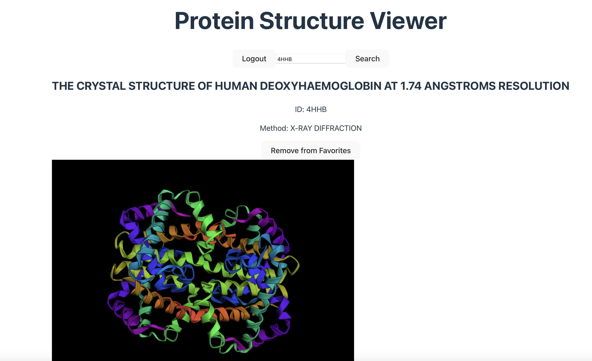
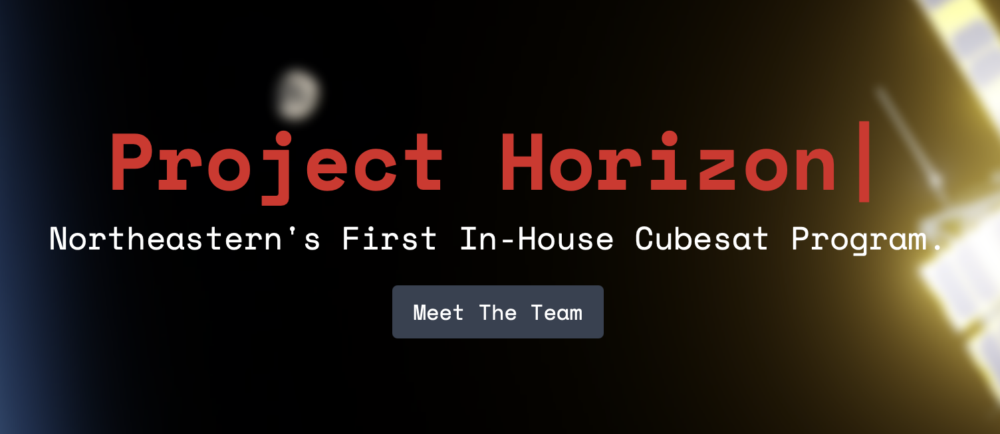
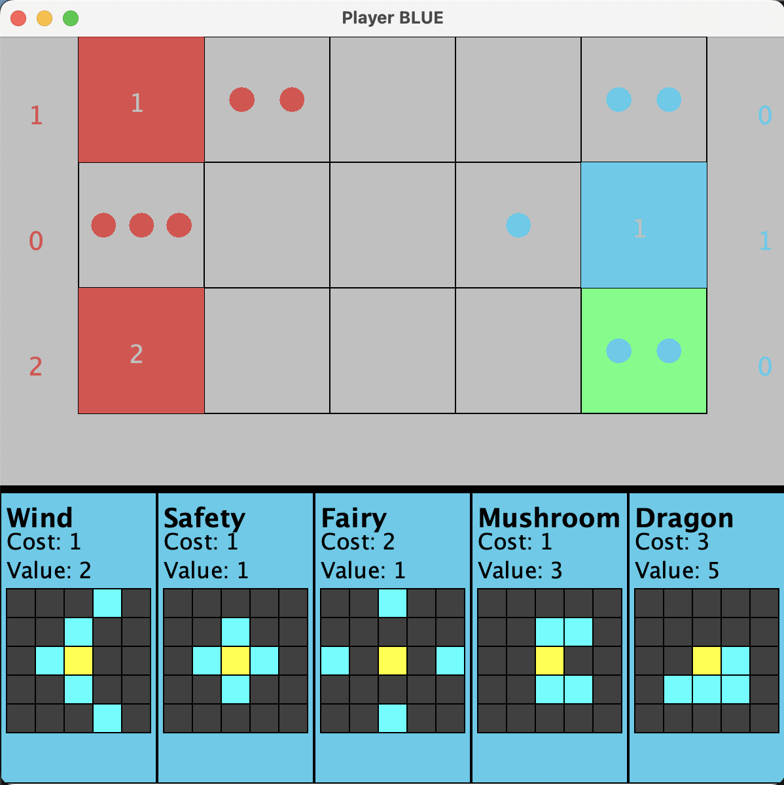

I'm Meredith, a second-year Computer Science and Neuroscience student at Northeastern University. I'm passionate about the intersection of software and the brain, especially computational modeling of neural systems.
Through co-op experiences in research labs and software development, I've built full-stack applications, automated complex molecular dynamics pipelines, and developed programs to simulate molecular behavior. I prioritize clean, scalable code and thrive working across interdisciplinary teams.
I'm currently seeking co-op and internship opportunities for Spring 2027, particularly in software engineering, research engineering, or health tech where I can contribute to meaningful, innovative work.
Outside of academics, I recharge with yoga, surfing, and walking my dog on the beach.
- Java
- Python
- JavaScript
- C++
- SQL
- React
- Spring Boot
- NumPy / Pandas
- F Prime
- Git / GitHub
- Intellij IDEA
- PyCharm
- VS Code
- Supabase (PostgreSQL)
- Jupyter
- AWS
- Terraform
- Docker
- Github Actions



I'm actively looking for co-op and internship opportunities. Whether you have a role in mind, want to collaborate, or just want to connect, feel free to reach out.
wanta.m@northeastern.edu